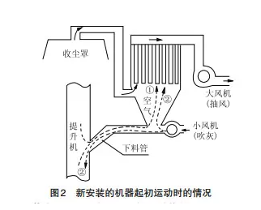
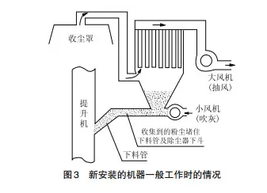
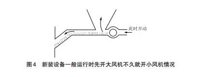
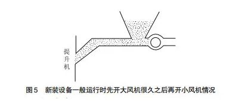

浅析单机脉冲除尘器运行问题
脉冲清灰方式依据脉冲电磁阀和空气压缩包，利用高压空气短时间内高速冲击震荡除尘滤袋的方式对滤袋表面粉尘进行清理，简单高效，自动化程度高，在袋式除尘器中应用非常广泛。
设备运行常见问题分析：
1)问题一
新安装的机器起初运行时出现的问题，又分两种(如图2所示)：

a.若大风机开，小风机(自己增装的风机)不开
起初当下料管没有粉尘时，大风机(设备厂配置的引风机)抽风时会将提升机、下料管内及小风机进口的空气抽走，影响大风机对收尘点的收尘能力。
b.若大小风机都开
如果起初将大风机与小风机同时都开动，会出现小风机的风一是会进入提升机内，引起运行中的提升机内的粉尘吹动，造成提升机内粉尘更大，使提升机往破碎机出口跑出来的粉尘更大;二是小风机鼓出的风进入除尘器内被大风机抽走，增加了大风机的负荷，此时大风机在收尘罩(各处收尘点设立的罩子)处的收尘能力将大大减弱。
2)问题二
一般运行中(通过一段运行后)出现的问题也分两种情形(如图3所示)：

a. 先只开大风机，不开小风机
会导致一段时间后，粉尘堵满下料管及除尘器下斗的一部分，更会堵塞在除尘器内。
b. 若先开大风机，后开小风机
这又可分两种情况：大风机开后，时间不隔多久再开小风机。如图4所示：

下料管内已有一部分粉尘，此时开动小风机，小风机的风会朝两个方向吹动，一是朝下料管方向进入到提升机内，二是朝除尘器尖斗方向向上，从而造成收尘效果下降，甚至影响整个收尘工作。
大风机开后，时间隔很久再开小风机。如图5所示：

此时下料管已被填满粉尘。若是再开动小风机，小风机的风吹不动下料管内已经积满了的粉尘。小风机的风只能从小风机的进风口出来，这就是生产中出现的小风机开后引起满地粉尘舞动的原因所在。
3.改善措施该厂因小风机安装后无一点益处，但恢复到厂家设备要求的安装高度又不可能，因为房屋高度已受限制，再安装锤式卸料阀亦不可能，因改造难度很大，只能在现有位置及高度的情况下想办法。
1)原除尘器改善措施
最简便易行又省人力的做法是：①取消小风机及下料管;②直接在除尘器底部安装螺旋给料机，通过螺旋给料机的出口引入提升机内，一切问题迎刃而解，且抽风能力达到最强，除尘效果才可达到最佳。
另外，安装时只要能将锤式卸料阀摆放下，尽量安装锤式卸料阀，这样，在锤式卸料阀的下面就可以安装以下两种设备均可：一是螺旋给料机;二是小风机。
这里需要说明的是，此时又怎么可以安装小风机了呢?这是因为有了锤式卸料阀后，锤式卸料阀对于小风机来说，形成了风的隔离作用，使小风机的风不会吹入到锤式卸料阀的上部内，促使小风机的力全部的吹向下料管内，以最大的风力将下料管内的粉尘吹到提升机内，从而达到理想的效果。
2)其他注意事项
但需了解到，下料管内粉尘吹完后，小风机的风力会影响提升机内运行中的粉尘的吹动，造成工作场地空间内粉尘的流动增大，影响环境，需及时地停止小风机的运行。
待一定时候再又开启小风机，时停时开，需要掌握好下料管内物料的情况。因下料管是用铁皮制作而无法观察到，只能根据现场运行情况及掌握的经验来判断，变得很麻烦。
一旦操作工不用心时，便又会出现诸多问题。因此，总的来说，无论何种状况，只要下料管不会形成有效斜度使粉尘自由落下时，最好的办法就只有安装螺旋给料机了。
除尘器一旦安装不规范，不但达不到期望的收尘效果，还可能影响整条生产线的运行，造成更大的麻烦。提前做好规划，正确合理规范安装设备非常重要。欢迎留言交流您遇到的问题。
本文由单机脉冲除尘器整理，本文不代表本站观点.